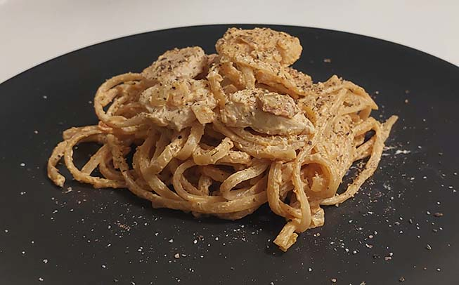

Fettuccine i pikantsauce med kylling og bacon
Ingredienser
2 pers.
| 200 g | Fettuccine |
| 200-300 g | Kyllingebryst |
| 2 fed | Hvidløg |
| 1 | Løg |
| 200 g | Pikant flødeost (rød) |
| 2 tsk | Paprika |
| 100-150 g | Bacon |
| Olivenolie | |
| Salt | |
| Peber |
Fremgangsmåde
- Skær bacon i mindre stykker, og steg det sprødt på en pande. Sæt derefter til siden og tør panden af
- Skær kyllingen i små tern og steg den i olivenolie, salt og peber. Sæt derefter til siden
- Kog pastaen i letsaltet vand i ca 10 minutter, til den er al dente
- Imens pastaen koger, hakkes løg og hvidløg fint, og steges et par minutter på panden
- Tilsæt pikant flødeost og paprika til panden
- Tilsæt kylling, bacon og pasta
- Rør godt rundt og smag til med salt og peber
Retten kan med fordel toppes med lidt friskkværnet peber
- Velbekomme